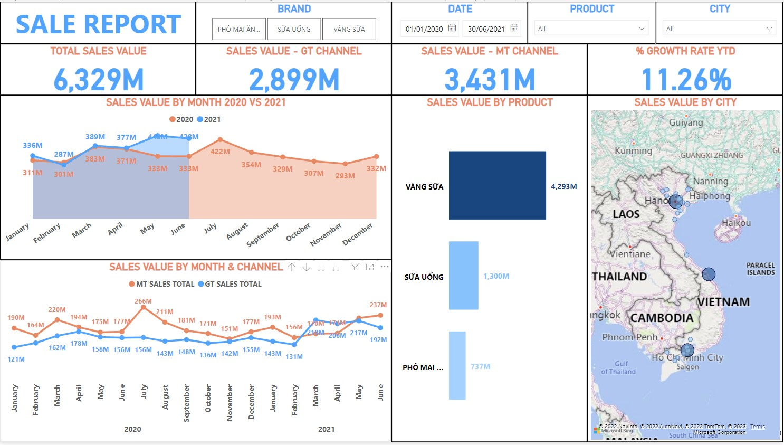
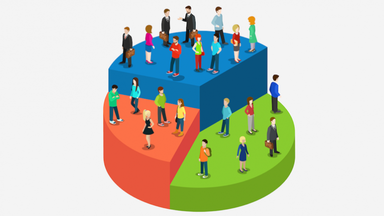
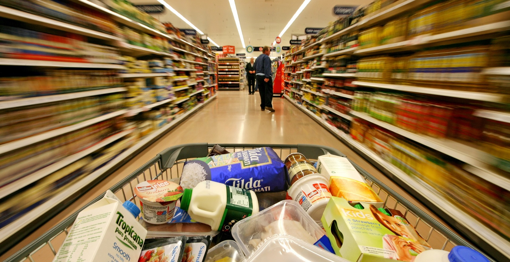
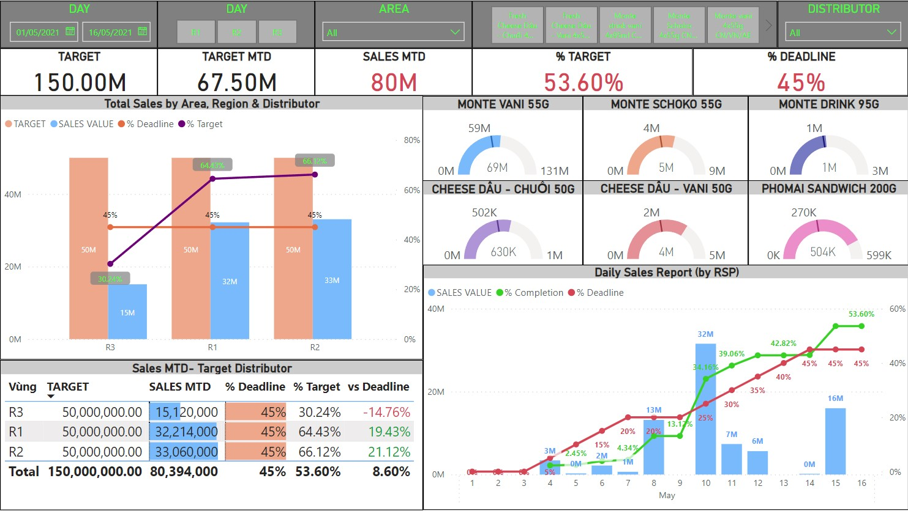

FMCG Sales Dashboard With Power BI
In this project, I conducted an in-depth analysis and visualized the sales data from a FMCG brand.
To be more specific, while the reporting involves capturing of general sales figures and detailed information based on Month/Year, Products, Channels and Geography,
the analysis will focus on providing information about Sales value and Growth rate as the requirements stated.

In this project, I was given the task of building a binary classification model to categorize the patients into Malignant Cancer group or Benign Cancer group.
I decided to run both liner ML algorithms and non-linear ML algorithms. To some extent, the work involves feature scaling and imbalance handling with SMOTE.
Besides, I also build a GUI for an user-friendly experience.

In this project, I used K-means Clustering to conduct customer segmentation from a mall customer data base.
The work required normalization since K-means Clustering is a distance-based model and the ranges of the variables are different from each other.
After implementing the trained model, I categorized the customers into 5 groups. I also built a GUI for an user-friendly experience.

In this project, I used SQL server to deal with the sales data from a FMCG brand.
The work involved advanced join, union, subquery, update, case-when, rank over to answer the analysis question
In this project, I used SQL to query covid data for preparation of the data visualization.
The task involves basic queries (aggregate functions, alias, join, CTE).
Here is the Link of the Tableau visualization

In this project, I clean, manipulate and visualize the month-to-date sales data from a FMCG brand.
To be more specific, descriptive analysis will be used to track the sales timeline by regions and products.
Besides, the products which have decent performance will be also identified in the report.